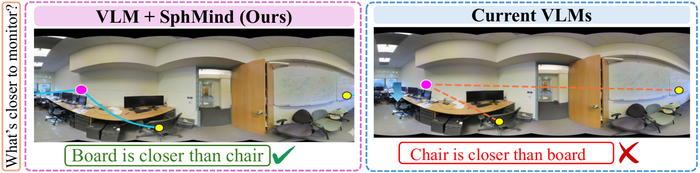
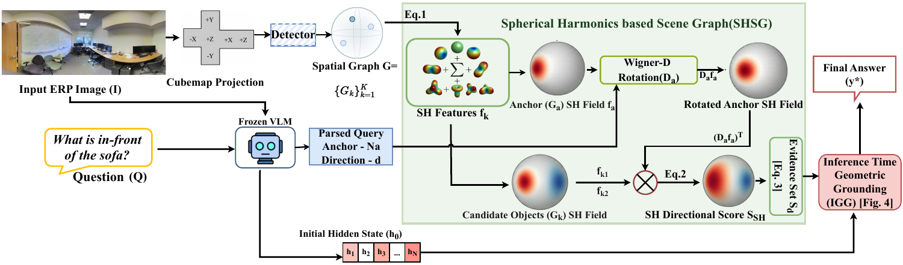
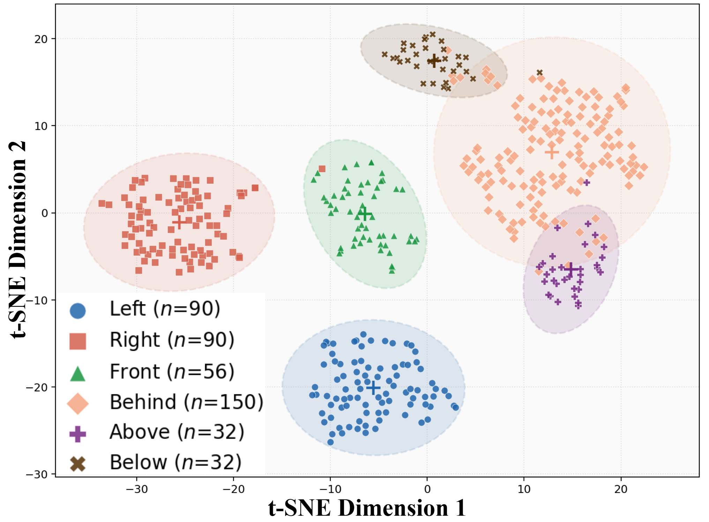

SphMind grounds VLM answers in spherical scene geometry while preserving the model’s visual understanding.
Abstract
Omnidirectional or 360° cameras give embodied agents a holistic view of their surroundings, but vision-language models (VLMs) trained on perspective images struggle with spherical distortion and the wrap-around seam. We present SphMind, a training-free, plug-and-play framework that decouples semantic perception from geometric reasoning. Its Spherical Harmonics-based Spatial Graph (SHSG) represents object relationships directly on the sphere using rotation-equivariant transformations. Inference-Time Geometric Grounding (IGG) then steers a frozen VLM’s internal representation toward geometrically valid answers, without changing model weights. Across three benchmark datasets, SphMind improves directional reasoning by an average of 21.4% on MP3D and Stanford2D-3D, exceeds prompt-engineering strategies by 8.7% on real-world ODI-Bench, and delivers 5.9× the full rotational consistency of the pixel-space baseline. It also resolves directional queries in an in-the-wild 360° capture where baseline VLMs fail.
Motivation
Core Question
How can frozen VLMs reason reliably about spatial relationships in a 360° scene without learning spherical geometry from new training data?

Geodesic reasoning on the sphere identifies the board as closer to the observer; the current VLM reverses the distance relationship.
VLMs bring strong semantic understanding, but their image representations assume a flat grid. A 360° panorama maps a sphere onto that grid, stretching regions near the poles and splitting continuous scenes at the seam. As a result, models can recognize objects yet misjudge which object is left, right, nearer, or farther. SphMind leaves semantic perception with the VLM and handles spatial geometry explicitly on the sphere.
Method
Framework Summary
Given a 360° image and a spatial question, SphMind detects scene objects, maps their locations onto the sphere, and builds a query-aware geometric representation. It uses that evidence to guide the frozen VLM toward a consistent answer at inference time.
Component 01
Spherical Harmonics-based Spatial Graph (SHSG)
SHSG lifts detected objects to the sphere and encodes their locations and relationships as continuous spherical-harmonic fields. Rotation-equivariant scoring handles directional queries while preserving the panorama’s global geometry.
Component 02
Inference-Time Geometric Grounding (IGG)
IGG optimizes the VLM’s final-token hidden state against a differentiable geometric cost. A norm-preserving update steers the answer toward a geometrically valid candidate without updating model weights.
SphMind Pipeline

SHSG builds a spherical scene representation; IGG uses its geometric constraints to guide the frozen VLM’s answer.
The two components work together: SHSG computes spherical evidence for candidate answers, and IGG injects that evidence into the VLM’s inference process. The model’s semantic knowledge remains available while its spatial prediction is corrected.
Spherical Directional Evidence

Key Finding
The plot shows SHSG representations separating into distinct groups for the six directions. Left and right form separate arcs; front and behind occupy different regions; above and below appear as isolated groups. The measured silhouette score of 0.532 supports this directional separation. The visualization projects 450 uniformly sampled points on the sphere. SHSG uses these separated patterns to score candidate answers by direction.
Results
Evaluation Highlights
SphMind improves spatial reasoning across synthetic and real-world panoramas, transfers to viewpoint changes, and remains consistent as the panorama rotates.
MP3D + Stanford2D-3D
+21.4%
Average gain in directional reasoning across the two panoramic benchmarks.
ODI-Bench
+8.7%
Improvement over prompt-engineering strategies on real-world panoramas.
Rotational Consistency
5.9×
Full rotational consistency score compared with ERP-pixel reasoning.
Real-world transfer
ODI-Bench directional accuracy
%
Strategy
Relative direction
Ego-view orientation
Baseline
46.13
45.71
Viewpoint guidance
45.80
45.10
Crop grounding
44.18
44.15
Response refinement
47.65
45.76
Chain of thought
46.33
43.20
SphMind
56.35
52.60
SphMind leads all four prompt-only strategies on both ODI-Bench measures; the paper reports an average gain of 8.7%.
Viewpoint generalization
OpenView-VQA accuracy
%
Question type
Base
SphMind
Trained
Overall
21.0
39.7
46.0
Pitch
22.5
36.2
44.3
Yaw
25.0
45.6
48.7
Pitch + yaw
23.1
42.1
45.0
The training-free method transfers to pitch and yaw changes, approaching the trained specialist.
Rotation robustness
Stanford 2D-3D-S consistency
Score
Method
Full
90°
180°
270°
ERP-pixel
0.043
0.437
0.212
0.451
SphMind
0.253
0.653
0.595
0.648
Full score requires a correct answer that remains consistent across all tested rotations.
Component study
Ablation on MP3D
Accuracy %
Configuration
Overall
Direction
Distance
Full SphMind
58.4
53.1
64.1
No IGG gradient
50.5
46.6
54.9
SHSG only
45.1
42.5
48.5
Cartesian encoding
47.3
43.1
52.6
ERP centroid encoding
43.6
38.9
49.8
Both spherical encoding and inference-time grounding contribute to the gains.
Contributions
01
We identify the spatial-semantic gap that causes VLMs to misread spherical geometry in 360° images.
02
We introduce SHSG, a spherical-harmonic scene graph for continuous, rotation-equivariant spatial reasoning.
03
We introduce IGG, a model-agnostic inference-time optimization that grounds VLM answers without weight updates.
04
We demonstrate gains across panoramic VQA, real-world ODI-Bench, viewpoint generalization, and rotational consistency.
Citation
@misc{debnath2026sphmind,
title={SphMind: Towards Robust, Training-Free VLM-based Spatial Reasoning with a 360 Camera},
author={Damodaran, Shriram and Debnath, Soumyaratna and Tan, Cheston and Wang, Addison Lin},
year={2026},
note={Manuscript}
}